Summoning 팁
- 업그레이드 우선순위: 각 색상 Summoning 업그레이드에서 에센스 생성 구매를 항상 최우선으로 하세요. 이는 미래 이득으로 복리처럼 불어납니다. 에센스 업그레이드를 더 이상 감당할 수 없을 때 다른 업그레이드들도 중요하며, 유틸리티 및 전반적인 체력·데미지 업그레이드 등 많은 유용한 것들이 있습니다. Arcane Cultist의 Essential Essence 탤런트는 총 Summoning 업그레이드 수에 따라 업그레이드 비용을 낮춰줍니다.
- 항상 Familiar 구매하기: 화이트 에센스 Familiar 구매는 4일마다 초기화되며 기본 Summoning EXP의 출처입니다. Summoning 레벨은 에센스 생성을 높이고 결국 Seraph 별자리 티어를 해제하면 모든 별자리 강도를 높일 수 있으므로 항상 구매하세요. World 7 Legend 탤런트와 Arcane Cultist 탤런트도 추가 소환 경험치 획득을 위해 구매 가능한 Familiar 수를 늘려줍니다.
- 일일 시도 사용하기: Summoning 전투는 뽑은 Familiar 카드와 적이 Familiar를 소환하는 위치 등 운적 요소가 있습니다. 간발의 차로 지더라도 모든 일일 시도를 사용해 더 나은 운을 바라며 재도전하세요.
- Summoning EXP 저장하기: Summoning 경험치는 소환 구역에 입장할 때만 캐릭터에게 추가됩니다. 경험치를 누적한 뒤 배율이 높아진 시점에 청구하는 것이 가능한 고급 전략입니다. 스탬프, 카드, 음식, 비약 등 대형 경험치 보너스 해제에 가까울 때 유용합니다. 경험치는 더 높은 레벨에서 어려워지는 World 2 Bonus Ballot이 Summoning EXP인 경우에도 누적할 수 있습니다.
- 보스 전투: 벽에 막히면 보스 스톤 전투를 잊지 마세요. 각 에센스 색상에 대한 강력한 배율이 진행에 큰 도움을 줄 수 있습니다.
- Summoning Doubler 교체: World 5의 Gambit Cavern에서 Summoning Doubler를 해제하면 Lamp에서 초기화할 수 있다는 것을 잊지 마세요. 이를 통해 일정 기간 에센스 생성 업그레이드에 집중해 대규모 에센스를 모은 후 데미지나 유틸리티 업그레이드로 전환해 최대한 전투를 밀어붙일 수 있습니다. 전투 한계에 부딪히면 며칠 간 에센스 생성 Doubler로 전환하고 이 과정을 반복하세요.
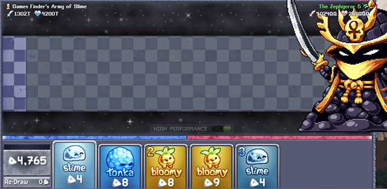
Summoning Stone 위치 (소환 보스)
이 보스들은 관련 색상 Summoning 업그레이드에 배율을 제공하며, 제한 시간 내에 Familiar로 보스를 처치할 수 있는지 확인하는 데미지 테스트입니다. 보스를 처치하면 더 높은 체력 풀로 재도전할 수 있어 추가 배율을 받습니다.
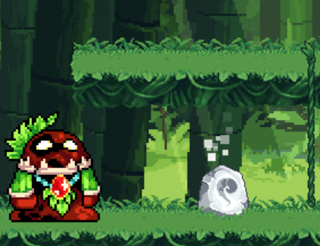
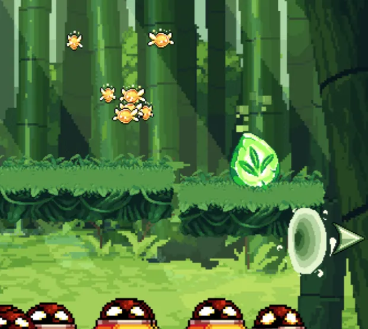

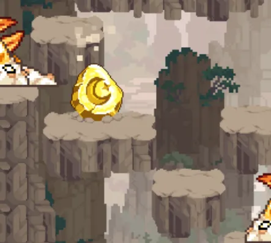
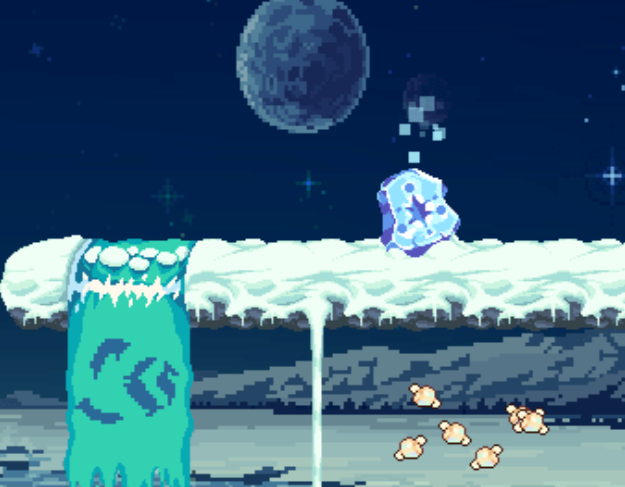
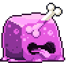
| 소환 색상 (기본 HP) | 지역 |
|---|---|
| White (250k) | Bamboo Laboredge |
| Green (1M) | Lightway Path |
| Yellow (150M) | Yolkrock Basin |
| Blue (10M) | Equinox Valley |
| Purple (4M) | Jelly Cube Bridge |
| Red (40M) | Crawly Catacombs |
| Cyan (500M) | Emperor's Castle Doorstep |
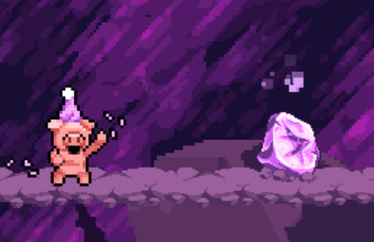
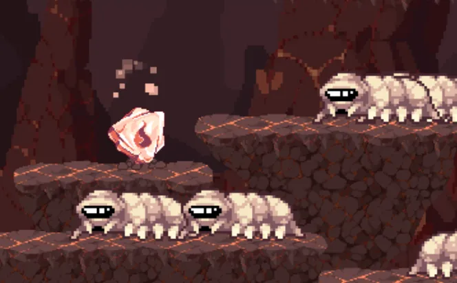
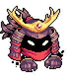
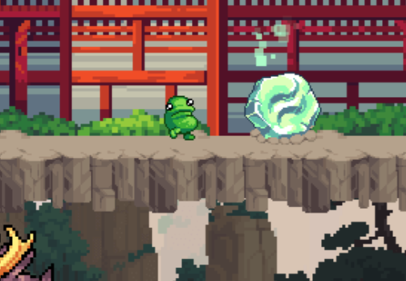
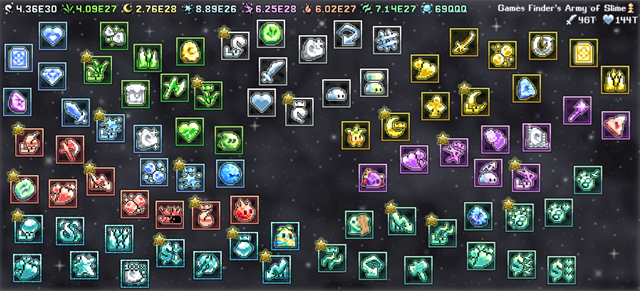
최적 업그레이드 / Doubler 우선순위
해제 후 에센스 생성과 전투 구성 순서로 나눈 우선 업그레이드 및 Summoning Doubler 티어 리스트입니다.
에센스 생성 우선순위
각 색상에서 가장 강한 에센스 생성은 Summoning 레벨과 색상별 승리 수에 따라 조금씩 달라지므로 자신의 계정 진행을 고려하세요. Summoning Doubler가 제한적이라면 특정 업그레이드를 클릭해 어느 것을 더블로 하면 더 강한지 확인할 수 있습니다.
| 업그레이드 이름 (에센스) | 효과 |
|---|---|
| Timely Essence (Cyan) | 모든 에센스 색상 생성이 Endless Summoning 승리 수마다 +(5%/레벨) 증가합니다. |
| Teal Knowledge (Teal) | Summoning 레벨마다 Teal 에센스 생성 +(1%/레벨). |
| Teal Tirade (Teal) | Teal 서킷 승리 수마다 시간당 Teal 에센스 생성 +(5%/레벨). |
| Cyan Knowledge (Cyan) | Summoning 레벨마다 Cyan 에센스 생성 +(1%/레벨). |
| Cyan Essence King (Cyan) | Cyan 서킷 승리 수마다 시간당 Cyan 에센스 생성 +(5%/레벨). |
| Red Knowledge (Red) | Summoning 레벨마다 Red 에센스 생성 +(1%/레벨). |
| Red Essence Ragin (Red) | Red 서킷 승리 수마다 시간당 Red 에센스 생성 +(5%/레벨). |
| Purple Knowledge (Purple) | Summoning 레벨마다 Purple 에센스 생성 +(1%/레벨). |
| Purp Essence Pumpin' (Purple) | Purple 서킷 승리 수마다 시간당 Purple 에센스 생성 +(5%/레벨). |
| Blue Knowledge (Blue) | Summoning 레벨마다 Blue 에센스 생성 +(1%/레벨). |
| Blue Essence Ballin' (Blue) | Blue 서킷 승리 수마다 시간당 Blue 에센스 생성 +(5%/레벨). |
| Yellow Knowledge (Yellow) | Summoning 레벨마다 Yellow 에센스 생성 +(1%/레벨). |
| Yellow Essence Winnin' (Yellow) | Yellow 서킷 승리 수마다 시간당 Yellow 에센스 생성 +(5%/레벨). |
| Green Knowledge (Green) | Summoning 레벨마다 Green 에센스 생성 +(1%/레벨). |
| Green Essence Victor (Green) | Green 서킷 승리 수마다 시간당 Green 에센스 생성 +(1%/레벨). |
| White Essence Champ (White) | 모든 색상의 승리 수마다 시간당 White 에센스 생성 +(5%/레벨). |
| White Knowledge (White) | Summoning 레벨마다 White 에센스 생성 +(1%/레벨). |
| Cost Laundering (Teal) | 구매한 총 Summoning 업그레이드 100개마다 모든 Summoning 업그레이드 비용 +(1%/레벨) 감소. |
| Sell Sell Sell (Teal) | 모든 Summoning 업그레이드 에센스 비용 (3%/레벨) 감소. |
| Cost Deflation (Cyan) | 모든 Summoning 업그레이드 에센스 비용 (2%/레벨) 감소. |
| Cost Crashing (Red) | 모든 Summoning 업그레이드 에센스 비용 (1%/레벨) 감소. |
| Cyan Summoning (Red) | Cyan Summoning Stone을 해제하고 Cyan 에센스 생성 시작. 또한 시간당 Cyan 에센스 +(10%/레벨). |
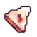 Red Summoning (Purple) | Red Summoning Stone을 해제하고 Red 에센스 생성 시작. 또한 시간당 Red 에센스 +(10%/레벨). |
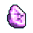 Purple Summoning (Blue) | Purple Summoning Stone을 해제하고 Blue 에센스 생성 시작. 또한 시간당 Blue 에센스 +(10%/레벨). |
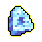 Blue Summoning (Yellow) | Blue Summoning Stone을 해제하고 Blue 에센스 생성 시작. 또한 시간당 Blue 에센스 +(10%/레벨). |
| Yellow Summoning (Green) | Yellow Summoning Stone을 해제하고 Yellow 에센스 생성 시작. 또한 시간당 Yellow 에센스 +(10%/레벨). |
| Green Summoning (White) | Green Summoning Stone을 해제하고 Green 에센스 생성 시작. 또한 시간당 Green 에센스 +(10%/레벨). |
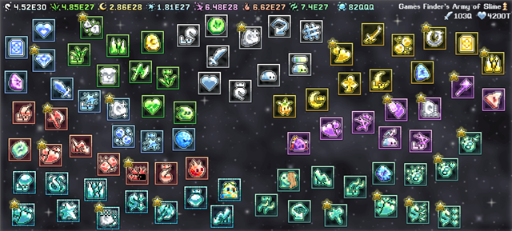
전투 우선순위
전투 우선순위는 데미지를 최대화하고, 유틸리티를 갖추며, 큰 체력 강화를 일부 포함하는 것입니다. Summoning Doubler가 적을 때는 세 가지의 균형이 필요합니다. 순서는 그 시점의 가장 강한 업그레이드에 따라 약간 달라지므로 자신의 계정에서 어떤 유사 업그레이드(예: % 데미지)가 더블하기에 더 강한지 확인하세요.
예를 들어 Teal 업그레이드가 레벨당 더 강하지만 비용이 상당하므로, Cyan, Red, Purple처럼 저렴한 에센스 유형이 더 높은 레벨에 도달할 수 있어 일반적으로 더 강합니다. Endless Summoning 진행과 총 Summoning 업그레이드 수에 따라 강해지는 Teal 업그레이드도 있어 강도가 달라집니다.
| 업그레이드 이름 (에센스) | 효과 |
|---|---|
| Hundredaire (Teal) | 유닛 소환 시 마나 비용의 100배를 보유하면 나머지 경기 동안 유닛 데미지 +(1%/레벨) 증가. |
| Units of Destruction (Cyan) | 대전 중 소환된 모든 유닛 데미지 +(10%/레벨). |
| Merciless Units (Red) | 대전 중 소환된 모든 유닛 데미지에 새로운 배율 +(8%/레벨) 추가. |
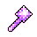 Brutal Units (Purple) | 대전 중 소환된 모든 유닛 데미지 +(3%/레벨). |
| Infinite Damage (Cyan) | Endless Summoning 승리 수마다 모든 소환 유닛 데미지 +(2%/레벨). |
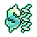 Damage Laundering (Cyan) | 총 Summoning 업그레이드 100개마다 모든 소환 유닛 데미지 +(1%/레벨). |
| Unit Obliteration (Teal) | 대전 중 소환된 모든 유닛 데미지 +(50%/레벨). |
| Seeing Red (Red) | 적이 라인을 넘어 데미지를 줄 때마다 전투 내내 모든 유닛 (1%/레벨) 데미지 증가. 적이 라인을 넘을 때마다 중첩됩니다. |
| Sharpened Spikes (Yellow) | 스파이크 데미지가 기본 유닛 데미지의 100% 증가. |
| Serrated Spikes (Teal) | 스파이크 데미지 (1%/레벨) 증가. |
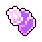 Final Card (Purple) | 손 패의 모든 카드를 낼 경우 플레이한 카드마다 마나 재생 +(1%/레벨). 멀티 넘버 카드는 여러 번 계산됩니다. |
| Mana Generation (White) | 대전 중 마나 생성 +(2%/레벨) 증가. |
| Manaranarr (Blue) | 대전 중 마나 생성 +(2%/레벨) 증가. |
| Mana Dividends (Purple) | 대전 중 마나 생성 +(2%/레벨) 증가. |
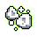 Starting Mana frfr (Green) | 각 대전 시작 시 마나 +(1/레벨) 추가. |
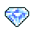 Jeweled Cards (Blue) | 임의 카드의 보석 변형이 나올 확률 (6%/레벨). 비용 3배지만 유닛 4배 소환! |
| Re-Draw (Yellow) | Re-Draw 버튼 해제로 비용을 지불하고 즉시 카드 전체 재드로우 가능. 첫 (1/레벨)회는 무료. |
| Infinite Health (Teal) | Endless Summoning 승리 수마다 모든 소환 유닛 HP +(2%/레벨). |
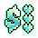 HP Laundering (Teal) | 총 Summoning 업그레이드 100개마다 모든 소환 유닛 HP +(1%/레벨). |
| Undying Units (Cyan) | 대전 중 소환된 모든 유닛 HP +(14%/레벨). |
| Glombolic Units (Teal) | 유닛을 거대하게 키워 체력을 동질적으로 +(100%/레벨) 증가. |
| Unit Blood (Red) | 대전 중 소환된 모든 유닛 HP에 새로운 배율 +(10%/레벨) 추가. |
| Unit Constitution (Yellow) | 대전 중 소환된 모든 유닛 HP +(5%/레벨). |
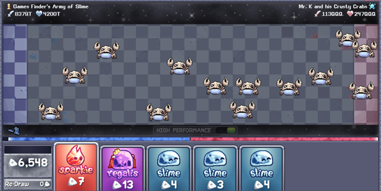
Summoning 전략
소환 전략은 진행하며 새로운 Familiar나 유틸리티 업그레이드를 해제할수록 변화합니다. 아래 전략들은 스톤 전투와 Endless 전투에 해당하며, 소환 보스 스톤 전략은 데미지 테스트를 통과하기 위해 가능한 한 많은 유닛을 스팸하는 것입니다.
초기 전략
초기 Summoning 전투는 대체로 간단합니다. 체력과 공격력이 충분히 높아 적을 처치할 수 있으므로 상대방을 막는 위치에 유닛을 소환하는 데 집중하세요. 어려워지기 시작하면 보통 전투 화면 하단에 유닛을 빠르게 소환해 상대방이 체력을 깎기 전에 압도할 수 있습니다.
Mana Overflow를 활용한 전략 (그린 에센스 업그레이드)
Mana Overflow를 해제하면 최대 마나와 마나 재생을 크게 높이기 위해 유닛 소환을 잠시 기다리세요. 체력이 거의 다 떨어질 때 유닛을 빠르게 소환해 상대방을 밀어내고 승리하세요. 이 전략은 나중에 손 패를 비울 때마다 마나 재생을 높이는 Final Card Purple 에센스 업그레이드와, 마나가 소환 유닛 비용의 100배이면 유닛 데미지를 높이는 Hundredaire Teal 에센스 업그레이드로 더욱 강화됩니다.
Spiked Placement를 활용한 전략 (그린 에센스 업그레이드)
Spiked Placement가 해제되면 유닛 소환 시 커서/손가락 주변에 범위 데미지 영역이 생성되어 데미지 출력이 크게 향상되며, 나중에 Serrated Spikes Cyan 에센스 업그레이드가 해제되면 더욱 강화됩니다. 이 공격을 상대방 Familiar가 가장 밀집한 곳에 집중하거나, 보스 전투에서는 항상 보스 자체에 집중하세요.
Redraw (옐로우 에센스)와 Sparkie (레드 에센스)를 활용한 전략
이 두 업그레이드가 해제되면 전략적으로 리드로우를 활용하는 것이 중요해집니다. Mana Overflow를 쌓는 동안 카드를 리롤해 적어도 하나의 Sparkie가 포함된 강력한 시작 패를 구성하세요. Sparkie는 범위 데미지와 넉백에 최고의 공격용 Familiar입니다. 이는 소환 전투의 주요 랜덤 요소 중 하나로, 초기 및 이후 Sparkie 운에 따라 불가능해 보이는 전투가 쉽게 바뀔 수 있습니다.
Seeing Red를 활용한 전략 (레드 에센스 업그레이드)
이 업그레이드는 해제 후 이전 전략들과 완벽하게 조합됩니다. 받은 체력 데미지에 대해 대규모 공격 버프를 제공합니다. Mana Overflow 전략과도 잘 어울리는데, 자신의 Familiar 소환을 기다리면 동시에 마나와 데미지를 쌓을 수 있습니다.
Endless 전략
Endless Summoning은 사이언 에센스 업그레이드로 해제되며, 스탬프 레벨, Equinox 최대 레벨, 음식 보너스 배율, 소환 승자 보너스 배율 등 더욱 강력한 보너스를 위한 점점 더 강해지는 상대방과의 무한 전투입니다. 여기서의 진행은 전반적인 소환 능력을 발전시켜야 하는 시간 제한이 있지만, 위의 전략들과 결합할 수 있는 특수 전략들이 있습니다:
| Endless 모디파이어 | 효과 | 전략 |
|---|---|---|
| Extra Time | 체력 포인트를 2배로 하여 더 오래 플레이할 수 있게 합니다. | 추가 체력을 Seeing Red 보너스 강화에 활용해 데미지를 높이세요. |
| Fair Play | 레인 스택 금지! 상대에게 데미지를 줄 때 해당 레인의 모든 유닛이 데미지를 받습니다. | 정밀한 소환 타이밍이 필요한 어려운 모디파이어입니다. Bloomy Familiar를 한 곳에 집중시키고 공격은 다른 수직 영역에서 하는 것이 좋습니다. Fair Play가 곧 발동될 것 같으면 소환을 잠시 기다리거나 다른 곳에 배치하세요. |
| Fast Forward | 아군과 적군 모두 170% 속도로 이동합니다. | Seeing Red 보너스를 쌓는 동안 빠른 속도로 체력이 더 빠르게 감소할 수 있으므로 주의하세요. |
| Invincibility | 유닛을 자유롭게 플레이하되, 매번 체력 1을 잃으나 최후 일격은 당신이 직접 해야 합니다. | 방어 위주 모디파이어로 Bloomy와 Guardio의 가치가 높아지므로 초기 리드로우에서 이들을 목표로 하되, Seeing Red도 계속 쌓으세요. 전투 끝에 도달한 유닛이 낭비되므로 마나를 아끼기 위해 상대에 맞춰 천천히 소환하다가 마지막 일격을 위해 한 번에 밀어붙이세요. |
| Slow Motion | 아군과 적군 모두 60% 속도로 이동합니다. | 전략 변화 없이 더 오래 걸립니다. |
| Offside Rules | 상대에게 데미지를 줄 때 미드필드 너머의 모든 아군 미니언이 사라집니다. | Familiar 타이밍에 주의하세요. 데미지를 줄 때 낭비될 수 있습니다. 오프사이드 규칙 발동 후 상대에게 압도당할 위험이 있으므로 곧 발동될 것 같으면 손 패에 Sparkie를 저장해 이후 회복에 활용하세요. |
| Triple Overtime | 체력 포인트 10배. 후반 덱 지속력을 확인합니다. | Extra Time과 유사하게 추가 체력을 Seeing Red 버프 강화에 활용하세요. |
| Zerg Surprise | 1턴에 모든 미니언을 플레이합니다! | Mana Overflow나 Redraw를 쌓는 시간이 단축되므로, Seeing Red 사용 중에는 체력이 빠르게 감소하는 것을 주의하세요. |
| Uno Draw 7 | 7장 패로 플레이합니다. | 평소보다 더 많은 카드를 볼 수 있어 여러 Sparkie를 쌓기 위한 초기 리드로우가 더 강력합니다. |
| Glass Cannon | 아군과 상대 모두 체력 포인트 1. | Seeing Red를 쌓을 수 없어 데미지가 크게 낮아집니다. 가능하면 상대방을 빠르게 처치하거나 방어적으로 플레이해 특정 열을 뚫고 나가는 데 집중하세요. |
| Truce | 모드 없음, 효과 없음, 트릭 없음. 정상적인 대전. | 일반 전투와 동일합니다. |